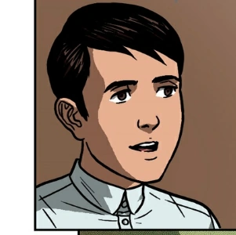

| ğ‚ğ«ğ¢ğ¬ğ¨ğ¬ğğ¨ğ¦ğ¨ 𝐈𝐛𝐚𝐫𝐫𝐚 |
ğˆğ§ğŸğ¨ğ«ğ¦ğšğğ¢ğ¨ğ§ ğ€ğ›ğ¨ğ®ğ 𝐓𝐡𝐞 ğ‚ğ¡ğšğ«ğšğœğğğ«ğ¬: |
 |
- Has an unusual height. Cheeks are brown and red. Honesty and satisfaction can be seen on the face.
- He is the only son of Don Rafael Ibarra.
- He studied abroad for seven years because his mother noticed that the education in the Philippines was being limited so she sent Crisostomo Ibarra to Europe.
- After going home from studying in Europe, Crisostomo Ibarra finds out about what has been happening while he was gone and that he isn't familiar with Philippine tradition anymore.
- His family has a bad reputation because of his grandfather and his great grandfather. The two of them had a nasty personality which lead people to think that the Ibarras are no good.
|
| 𝐌𝐚𝐫𝐢𝐚 𝐂𝐥𝐚𝐫𝐚 |
 |
- Maria Clara, also known as Maria Clara de los Santos, is a fictional character from Noli Me Tangere who is known as the fiancee of Crisostomo Ibarra.
- She is the only daughter of Kapitan Tiago.
- She's a woman of high social status.
- Her mother, Donya Pia, got sick after giving birth and passed away. Due to that reason, Tiya Isabel raised her instead.
- Received an education at the Sta. Clara convent.
- The miracle child of Kapitan Tiago and Doña Pia Alba
|
| 𝐏𝐚𝐝𝐫𝐞 𝐃𝐚𝐦𝐚𝐬𝐨 |
 |
- Padre Damaso is one of the antagonist found in Noli Me Tangere.
- He is a greedy man that uses his power as a person who works for God to do wrong.
- He's the one responsible for Don Rafael Ibarra's death. He accused Don Rafael Ibarra, also known as Crisostomo Ibarras father, of murder and being an "erehe".
- Was also responsible for the lost of Don Rafael Ibarra's coffin. He ordered people to dig up Don Rafael's grave, but they ended up just throwing him into a swamp.
- Also known as Padre Ganara. It's a nickname given to him to describe the fact that he is "fat" and likes to eat. It also means "Will win" in Spanish which symbolizes Padre Damaso's power.
|
| 𝐏𝐚𝐝𝐫𝐞 𝐒𝐚𝐥𝐯𝐢 |
 |
- After Padre Damaso got sent away from San Diego, Padre Salvi came in as a replacement.
- Unlike Padre Damaso, Padre Salvi does not use his power to abuse people. When someone does something bad he makes them pay multa or tax instead.
- Thin and is prone to illness.
- Like a moscamuerte or "patay na langaw" also known as "dead fly" in english.
|
𝐒𝐢𝐬𝐚 |
| |
- Sisa is a woman with two children, Crispin and Basilio, and a husband named Pedro.
- She lives in San Diego with her family.
- Sisa and her family are not wealthy so her kids, inluding herself, need to work day and night.
- Her husband, Pedro, doesn't have a job. Despite that he still gambles using his family's money and hurts Sisa whenever he gets the chance to.
- Views her husband as a "God" and her children as angels.
|
𝐂𝐫𝐢𝐬𝐩𝐢𝐧 |
 |
- Crispin is the brother of Basilio.
- His mother is Sisa
- He lives in San Diego with his family.
- He became a sacristan for the church of San Diego in order to get money for his family.
- Crispin was also accused of stealing in one of the scenes in Noli Me Tangere because of his fathers bad habits.
|
𝐁𝐚𝐬𝐢𝐥𝐢𝐨 |
|  |
- The older brother of Crispin.
- His mother is Sisa and lives in San Diego.
- Basilio also became a sacristan for the church to get more money.
- He made plans about working for Crisostomo Ibarra instead of the sacristan because he sees Crisostomo Ibarra as a good guy.
- Prioritizes his mother and brother but not his father.
- When the sacristan mayor suddenly arrived and began attacking them, Crispin couldn't escape, while Basilio fled. Basilio was grazed by a bullet from the Guardia Civil but still managed to return home.
|
𝐃𝐨𝐧𝐲𝐚 ğ•ğ¢ğœğğ¨ğ«ğ¢ğ§ğš |
 |
- In 1836, Doña Victorina rejected all suitors to marry a Spaniard. By 1881, her social status was at stake, leading her to meet quack doctor Don Tiburcio through a mutual friend.
- Doña Victorina was a prominent member of San Diego's high society, and she shared a close friendship with Kapitan Tiago.
- Together with her husband, Don Tiburcio, they actively sought to establish connections with the influential personalities of San Diego as part of their quest to enhance their social standing.
- Their aspiration was to solidify their position within the elite circles of the community.
- During this period, she started adopting the façade of a Spaniard, despite being a native indio herself, displaying an affected and pretentious demeanor.
|
ğŠğšğ©ğ¢ğğšğ§ ğ“ğ¢ğšğ ğ¨ |
 |
- Tiago, the only son of a prosperous sugar mill owner in Malabon, initially lacked educational support from his father. Instead, a Dominican sponsored his schooling.
- He later married Doña Pia Alba, and together, they acquired land in San Diego, Laguna. They formed a close bond with Don Rafael Ibarra and Padre Damaso.
- After six childless years, Padre Damaso advised Doña Pia Alba to make a pilgrimage to Obando. She became pregnant but tragically passed away while giving birth to their daughter, whom Capitan Tiago named Maria Clara.
- When Maria Clara reached her adolescent years, Capitan Tiago arranged for her to receive an education at the Sta. Clara convent.
- Capitan Tiago and Don Rafael made an agreement to arrange the betrothal of their two children.
|
𝐏𝐢𝐥𝐨𝐬𝐨𝐩𝐨 𝐓𝐚𝐬𝐢𝐨 |
 |
- Born to wealth, Tasio, a gifted student of philosophy, faced a crucial decision. His devout mother urged him to become a priest or abandon his studies. Driven by love, he chose marriage over the priesthood.
- Pilosopo Tasio was a wise and intellectually gifted person. Demonstrating a passion for philosophy and education from his student years, Tasio dedicated his entire life to extensive studying, even to the extent of impoverishing himself through his voracious book purchases.
- He was called "Bobong Tasio" by the unintelligent or the people who didn't study.
- There were instances that people thought of him as an insane person because of his love for studying.
|